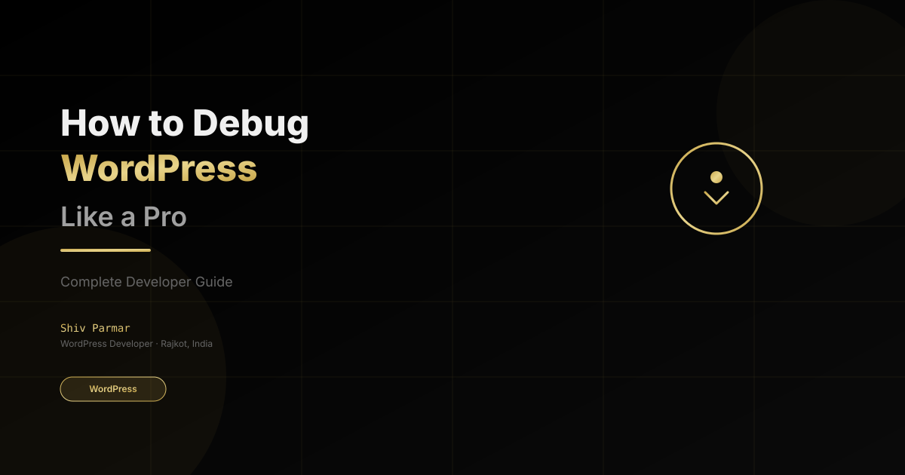

How to Debug WordPress Like a Pro
Table of Contents
Mastering WordPress Debugging: A Complete Developer's Guide
Hello everyone! I am Shiv Parmar, a WordPress developer based in Rajkot, India. Over the years of building custom themes, plugins, and optimizing WooCommerce stores, one skill that has saved me countless hours is WordPress debugging. In this comprehensive guide, I will walk you through the techniques, tools, and best practices to debug WordPress like a professional developer.
Whether you are dealing with the dreaded White Screen of Death, PHP errors, plugin conflicts, or performance issues, knowing how to properly debug WordPress is essential for any serious developer.
Why Proper Debugging Matters
Before diving into the technical details, let us understand why debugging is crucial:
- Save Development Time: Proper debugging tools can reduce troubleshooting time from hours to minutes.
- Better Code Quality: Understanding errors helps you write cleaner, more maintainable code.
- Client Satisfaction: Quick issue resolution means happier clients and fewer support tickets.
- Security: Many security vulnerabilities can be identified through proper error logging.
"Debugging is not a chore; it is a skill that separates amateur developers from professionals. The ability to quickly identify and fix issues is what makes you valuable to clients."
Step 1: Enable WordPress Debug Mode
The first step in any WordPress debugging process is to enable the built-in debug mode. This is done by editing your wp-config.php file.
// Enable WordPress Debug Mode
define( 'WP_DEBUG', true );
// Log errors to a file (recommended for production)
define( 'WP_DEBUG_LOG', true );
// Hide errors from displaying on screen (use false during development)
define( 'WP_DEBUG_DISPLAY', false );
// Ensure PHP errors are also logged
@ini_set( 'log_errors', 1 );
@ini_set( 'error_log', WP_CONTENT_DIR . '/debug.log' );
Once enabled, WordPress will log all PHP errors, warnings, and notices to wp-content/debug.log. This file is invaluable for identifying issues.
Step 2: Understanding WordPress Error Types
WordPress errors fall into several categories. Understanding each type helps you diagnose issues faster:
PHP Fatal Errors
These stop script execution immediately. Common causes include:
- Missing files or functions
- Syntax errors in PHP code
- Memory limit exceeded
- Unsupported PHP versions
PHP Warnings and Notices
These do not stop execution but indicate potential problems:
- Undefined variables or functions
- Deprecated function usage
- Missing array keys
Database Errors
WordPress stores all content in a database. Common database errors include:
- "Error establishing a database connection"
- "wp_posts table does not exist"
- Corrupted database tables
Step 3: Using Query Monitor Plugin
One of the most powerful debugging tools for WordPress developers is the Query Monitor plugin. It provides detailed information about:
- Database queries (including slow queries)
- PHP errors and hooks
- HTTP API calls
- Enqueued scripts and styles
- Conditional query information
// Install Query Monitor via WP-CLI
wp plugin install query-monitor --activate
Once activated, Query Monitor adds a new menu item in the admin bar showing real-time debugging information.
Step 4: Debugging with Browser Developer Tools
Not all WordPress issues are server-side. Frontend debugging is equally important:
Console Tab
Check for JavaScript errors that may affect functionality:
- Look for red error messages
- Check for failed network requests
- Verify AJAX calls are working correctly
Network Tab
Monitor all HTTP requests to identify:
- Failed API calls (4xx and 5xx errors)
- Slow-loading resources
- Missing assets (CSS, JS, images)
Elements Tab
Inspect HTML structure to verify:
- Proper hook placement
- CSS class applications
- Dynamic content injection
Step 5: Common WordPress Issues and Fixes
White Screen of Death (WSOD)
The most feared WordPress error. Here is how to debug it:
- Enable WP_DEBUG to see the actual error
- Check
wp-content/debug.logfor PHP errors - Disable all plugins and re-enable one by one
- Switch to a default theme temporarily
- Increase PHP memory limit in
wp-config.php
Plugin Conflicts
When plugins conflict, follow this systematic approach:
- Deactivate all plugins
- Reactivate plugins one by one, testing after each
- Identify the conflicting plugin
- Check for plugin compatibility with your WordPress version
- Contact plugin developer or find alternatives
Performance Issues
Slow WordPress sites can be debugged by:
- Checking for slow database queries with Query Monitor
- Reviewing plugin impact on page load
- Analyzing CSS and JS file sizes
- Monitoring server response times
Step 6: Advanced Debugging Techniques
Error Logging with Custom Functions
Create custom logging functions for specific scenarios:
<?php
/**
* Custom debug logging function
* @param string $message The message to log
* @param string $level Error level (error, warning, info)
*/
function shiv_debug_log( $message, $level = 'info' ) {
if ( WP_DEBUG ) {
$timestamp = date( 'Y-m-d H:i:s' );
$log_entry = "[{$timestamp}] [{$level}] {$message}" . PHP_EOL;
$log_file = WP_CONTENT_DIR . '/debug.log';
error_log( $log_entry, 3, $log_file );
}
}
// Usage examples:
shiv_debug_log( 'Plugin initialized successfully' );
shiv_debug_log( 'API request failed: ' . $error_message, 'error' );
shiv_debug_log( 'Query executed in ' . $time . ' seconds', 'warning' );
Debugging WooCommerce
WooCommerce has its own debugging mode. Enable it in wp-config.php:
// Enable WooCommerce Debug Mode
define( 'WC_DEBUG', true );
define( 'WC_DEBUG_LOG', true );
define( 'WC_DEBUG_DISPLAY', false );
Step 7: Best Practices for Production
Debugging in production requires extra caution:
- Never leave WP_DEBUG enabled on production - it exposes sensitive information
- Use error logging instead of display - keep errors in logs, not on screen
- Monitor log files regularly - set up alerts for critical errors
- Implement proper error handling - use try-catch blocks for critical operations
- Use staging environments - test all changes before deploying to production
Recommended Debugging Tools
Here are my top recommendations for WordPress debugging:
- Query Monitor - Comprehensive debugging toolbar
- Debug Bar - Lightweight debugging panel
- WP-CLI - Command-line debugging and management
- Browser Developer Tools - Frontend debugging
- PHP Error Log - Server-side error tracking
- New Relic / Query Monitor - Performance monitoring
Wrapping Up
Debugging WordPress is a skill that improves with practice. By following the techniques in this guide, you will be able to quickly identify and resolve issues, making you a more efficient and valuable developer.
Remember: the goal is not just to fix errors, but to understand why they occurred and how to prevent them in future development.
Happy debugging from Rajkot!